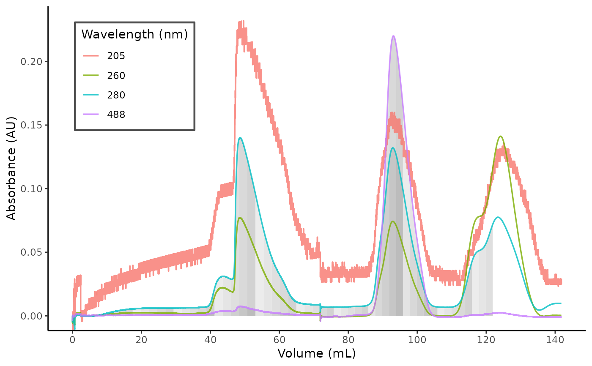

Plot Chromatogram with Fractions
chrom_plot_fractions(
data,
wl_show = NULL,
wl_frac = 280,
fractions = TRUE,
frac_include = "all",
frac_labelling = 5,
frac_text_size = 3,
frac_text_adjust = 1.3
)Datafram containing values.
Wavelengths to show on the plot.
Wavelengths to show the fractionation scheme for.
Logical, whether to incude fractions on the plot.
Specific fractions to include. Either "all" for all fractions, or a numeric vector of length 2, specifying the limits for the fractions to be included (e.g. c(10, 30) includes fractions from 10 till 30, including both).
How often to label the fractions. Every $n_th$ fraction is labelled.
Size of the labels for the fractionation.
`vjust` for the labels for the fractionation.
a ggplot object.
fl1 <- system.file("extdata",
"20220809_SFPQfl_TEVdig_S200_part1.TXT",
package = "chromr"
)
fl2 <- system.file("extdata",
"20220809_SFPQfl_TEVdig_S200_part2.TXT",
package = "chromr"
)
df1 <- chrom_read_quadtech(fl1)
df2 <- chrom_read_quadtech(fl2)
dat <- chrom_append_run(df1, df2)
#> Warning: longer object length is not a multiple of shorter object length
#> Warning: longer object length is not a multiple of shorter object length
chrom_plot_fractions(dat, wl_frac = c(280, 488))
